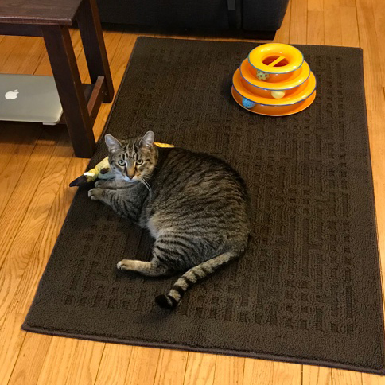
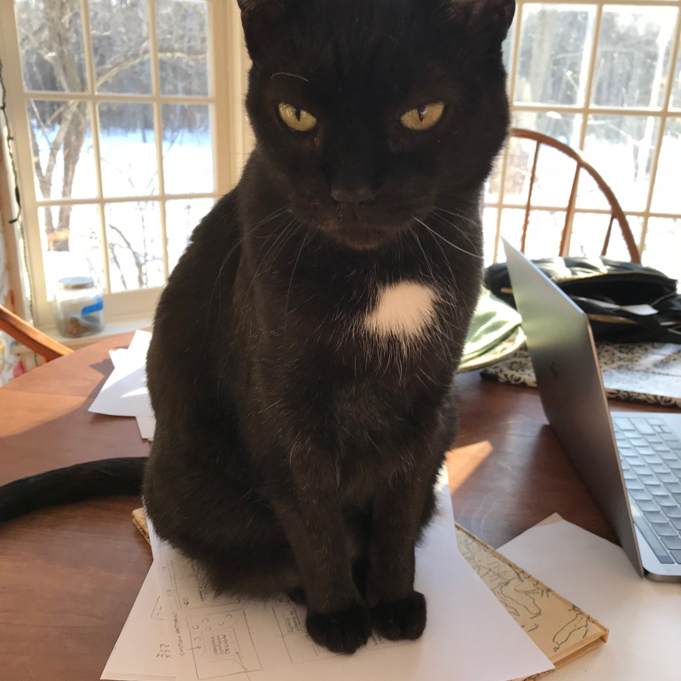
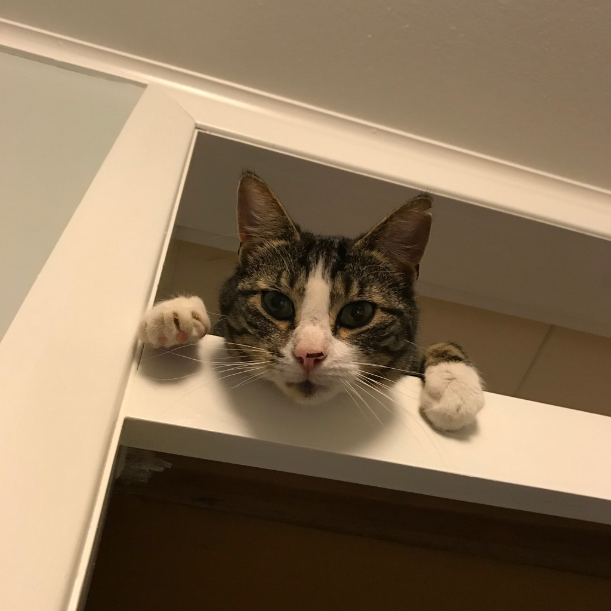
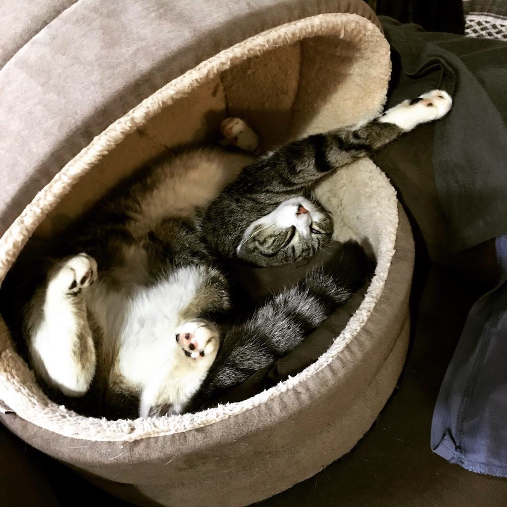
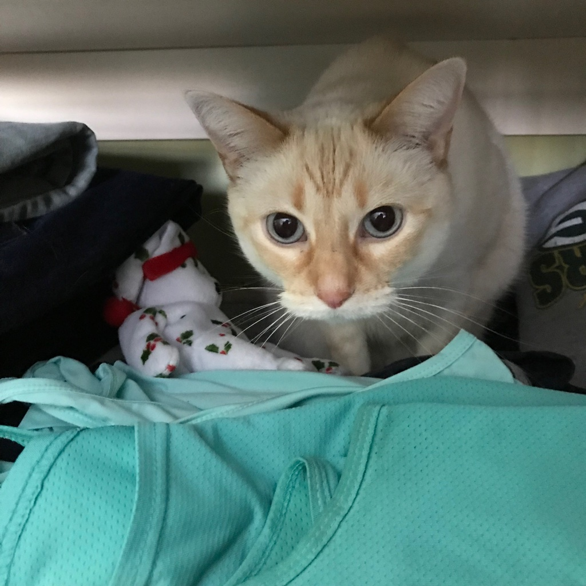
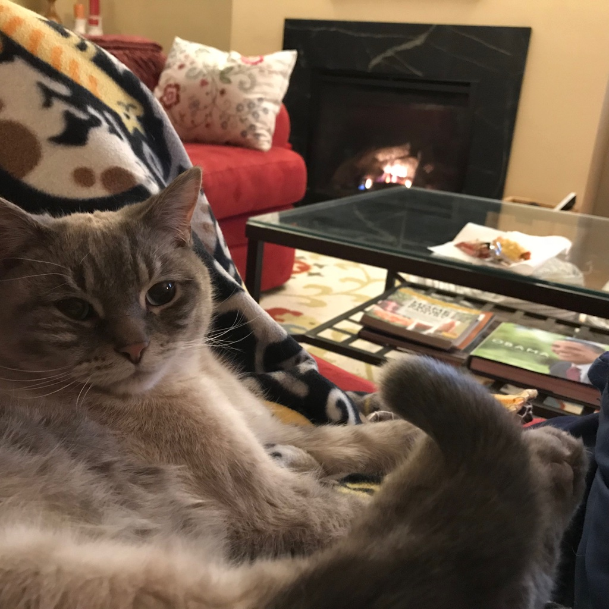

Discover which furry friend is the right match for you!
Jack

Originally from New Zealand, Jack the Fat Kiwi Cat moved to the United States in 2017. He's a cuddly boy who loves to sit behind you on the top of the couch while you read or watch tv.
Tippy

Archnemesis to Jack, Tippy likes to have all the attention from his human and no competition from other pets. He loves to sit on whatever project you're working on. **Not recommended for rentals in houses with other cats**
Lily

Lily Bean fancies herself a princess even though her pedigree is less than pure. A true sweetheart, her talents include prancing through paddocks and hunting bugs on high walls and ceilings.
Elsie

A real mini-me to Lily, Elsie-Mousie also thinks she's a princess. Aside from showing off her rodent-catching talents, she loves cuddling, especially if it involves the fireplace or watching tv.
Honey

Honey has an affinity for your wardrobe. Once discovered squished in an underwear drawer after missing for 14hr, she's likely to appear crawling out of your closet after a long winter's nap.
Baby Waffles

Born into a litter of breakfast food, Baby Waffles is far cuddlier than Pancake, Croissant, and French Toast. His favorite activities are cuddling, sleeping in front of the fire, and pinging his claws on the fireplace grate when he's meditating.